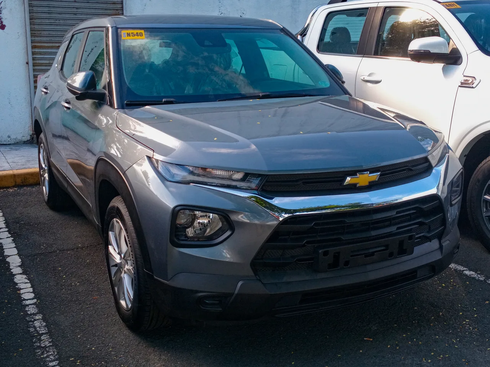
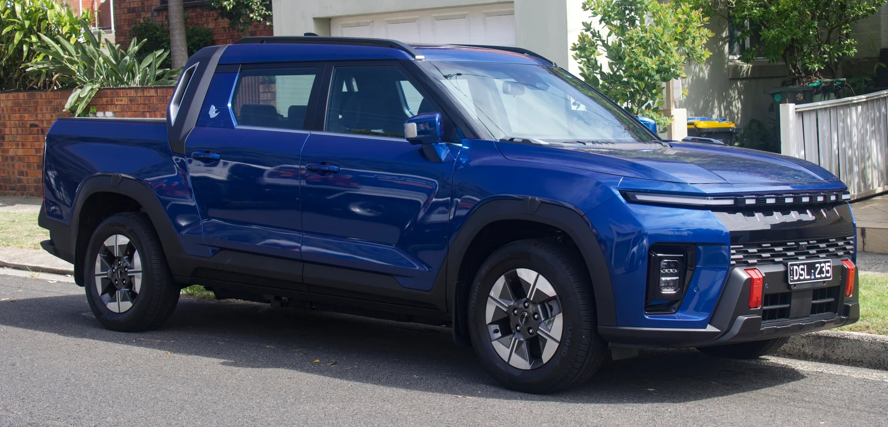
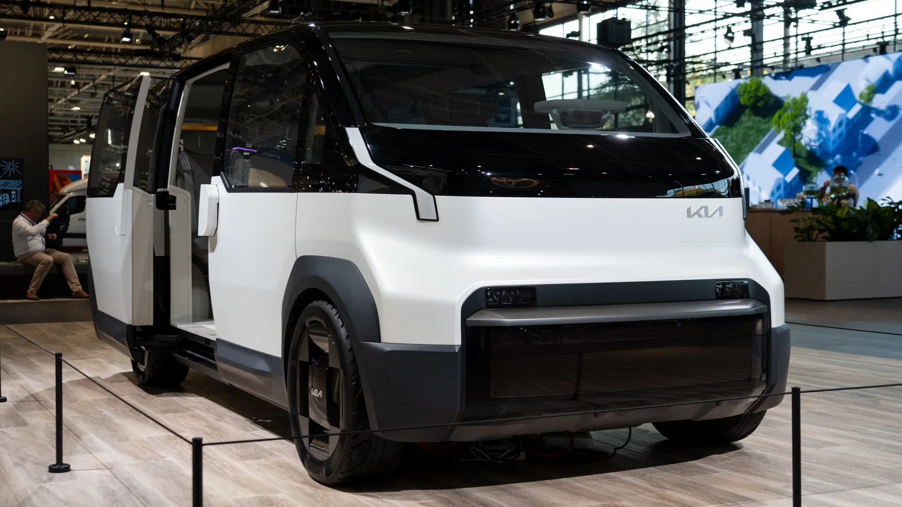

▲ 완성차 조립 라인. 9월 현대차 판매는 전월보다 6.7% 늘었지만 전년 동월보다는 16.0% 줄었다 ⓒ Wikimedia Commons
"파업 물량은 메웠다, 그런데 작년 9월은 못 넘었다." 9월 30일 9월 판매 발표 전 관전 포인트에서 던진 질문은 두 가지였다. 파업으로 못 만든 차를 9월에 얼마나 메웠는가, 그리고 노사 타결 이후 정상화가 숫자로 나타났는가. 10월 1일 공개된 각 사 자료로 답을 정리한다. 처음 쓸 때 빠져 있던 한국GM(GM한국사업장)의 9월 실적은 10월 1일자 보도로 확인돼 표에 넣었고, 이제 5사 합계로 비교한다.
1. 먼저 답부터 — "메웠지만 전년을 넘지는 못했다"
5사의 9월 합계는 64만 6,502대다. 8월 5사 합계 58만 9,412대보다 약 5만 7천 대(9.7%) 늘었다. 내수는 7만 9,601대에서 9만 9,843대로 25.4% 증가했고, 수출·해외(기아 특수차량 822대 포함)는 50만 9,811대에서 54만 6,659대로 7.2% 늘었다(합계는 각 사 발표 수치를 필자가 더한 값). 8월에 40% 넘게 빠졌던 현대차 내수가 전월 대비 42.8% 회복된 것이 내수 반등의 가장 큰 몫이다. 수출·해외가 전체의 약 84%(545,837대)를 차지하는 구조라 합계는 수출 흐름에도 크게 좌우된다.
그러나 '정상화'라고 부르기엔 이르다. 현대차는 9월 전체로 전년 동월 대비 16.0%, 국내는 25.7%, 해외는 13.9% 줄었다. 현대차는 이유로 "추석 연휴로 영업일수가 줄고 신차 대기 수요 등의 영향이 있었다"고 설명했다. 5사 전체로는 한국GM의 수출 급증(+79.5%, 필자 계산)이 합계를 끌어올려 전년 대비 감소폭이 약 5.4%로 줄었다. 파업 물량 만회가 판매에 얼마나 반영됐는지는 산업통상부 9월 산업동향의 생산 통계가 나와야 판단할 수 있는데, 이 통계는 10월 1일 현재 미발표다.
앞서 8월 상황은 8월 국산차 판매 감소 기사와 기아 8월 내수 1위 기사에서 다뤘다.

▲ 자동차 운반선. 9월 5사 수출·해외 판매는 54만 5,837대로 전체의 약 84%를 차지했다 ⓒ ITookSomePhotos (Wikimedia Commons, CC BY-SA 4.0)
2. 5사 9월 성적표
| 회사 | 합계 | 내수 | 수출·해외 | 전년 동월 대비 | 전월(8월) 대비 |
|---|---|---|---|---|---|
| 현대차 | 307,998대 | 49,022대 (-25.7%) | 258,976대 (-13.9%) | -16.0% | +6.7% |
| 기아 | 281,984대 | 45,705대 (-6.7%) | 235,457대 (+7.5%) | +5.1% | +5.7% |
| 한국GM | 41,101대 | 727대 | 40,374대 | +73.3% | +78.4% |
| KGM | 8,863대 | 2,100대 (-48.8%) | 6,763대 (+3.5%) | -16.7% | +29.2% |
| 르노코리아 | 6,556대 | 2,289대 (-45.3%) | 4,267대 (-5.8%) | -24.7% | +53.9% |
| 5사 합계 | 646,502대 | 99,843대 | 545,837대 | 약 -5.4% | +9.7% |
✔ 수치 확인 메모
기아 합계 28만 1,984대에는 특수차량 822대가 포함된다(국내 45,705 + 해외 235,457 + 특수 822). 따라서 표의 내수·수출 합을 더해도 5사 합계와 822대 차이가 난다. 기아·현대차 수치는 모두 도매 판매 기준(기아 보도자료 명기)이라 소비자 인도·등록 대수와 다를 수 있다. 전월 대비 값은 8월 발표치(현대차 288,574대, 기아 266,675대, 한국GM 23,042대, KGM 6,860대, 르노코리아 4,261대)와 비교해 필자가 계산했다. 한국GM의 전년비(+73.3%)와 합계·내수·수출 대수는 한국GM 발표(10월 1일 아주경제 보도)이고, 한국GM 내수(727대)의 전월·전년 비교와 수출 증가율은 필자 계산이다(8월 731대, 2025년 9월 내수 1,231대·수출 22,492대). 5사 전년 대비 -5.4%는 2025년 9월 5사 합계 68만 3,150대(언론 집계)를 기저로 한 필자 계산이다. 이 기저에는 현대차 2025년 원발표치가 들어 있어, 현대차 기저가 달라졌다면 값도 달라진다(3장 참고).
3. 현대차 — 내수 43% 회복, 그래도 전년 대비 -25.7%
현대차는 9월 전 세계 시장에서 30만 7,998대를 팔았다. 8월(288,574대)보다 6.7% 많지만 전년 동월보다는 16.0% 적다. 8월 내수가 3만 4,333대(-41.1%)까지 내려갔던 것과 비교하면 9월 내수 49,022대는 42.8% 늘어난 값이다. 해외는 25만 8,976대로 전월(254,241대) 대비 1.9% 증가에 그쳤다. 내수 반등폭이 해외보다 컸다(원인은 확인 못 함). 9월 내수는 현대차(49,022대)가 기아(45,705대)를 3,317대 앞서, 8월에 기아에 내줬던 국내 1위를 되찾았다.
국내 승용(세단)은 2만 901대였다. 그랜저 8,898대, 아반떼 7,305대, 쏘나타 4,153대 순이다. RV는 1만 3,710대로 싼타페 3,217대, 팰리세이드 2,965대, 코나 1,872대였고, 소형 상용은 6,653대(포터 3,420대, 스타리아 3,088대), 대형 버스·트럭은 2,016대, 제네시스는 5,742대(G80 1,959대, GV70 1,959대, GV80 1,261대)다. 8월 현대차 국내 1위였던 그랜저(5,931대)는 8,898대로 50% 늘었다. 아반떼는 8월 1,462대에서 7,305대로 5배 늘며 승용 2위에 올랐다(8월 수치는 지난 프리뷰 기사 기준). 현대차 공식 발표는 현대차그룹 뉴스룸 9월 판매 발표 바로가기에서 확인 가능하다.

▲ 더 뉴 그랜저. 9월 현대차 국내 1위는 8,898대를 판 그랜저였다 ⓒ Damian B Oh, Wikimedia Commons (CC BY-SA 4.0)
세단은 늘고 RV는 반토막 — 전년 9월과 비교하면
전년 동월(2025년 9월 현대차 발표) 모델별 수치와 나란히 놓으면 차종별 온도 차가 보인다. 세단은 전년보다 늘었는데 RV와 상용·제네시스는 크게 줄었다. 어느 차종이 왜 줄었는지는 회사가 밝히지 않았다(생산 차질의 영향은 필자 추정이며 확인 못 함).
| 구분 | 2025년 9월 | 2026년 9월 | 증감률 |
|---|---|---|---|
| 세단 합계 | 18,517대 | 20,901대 | +12.9% |
| 그랜저 | 5,398대 | 8,898대 | +64.8% |
| 아반떼 | 7,675대 | 7,305대 | -4.8% |
| RV 합계 | 26,475대 | 13,710대 | -48.2% |
| 싼타페 | 5,763대 | 3,217대 | -44.2% |
| 팰리세이드 | 4,070대 | 2,965대 | -27.1% |
| 코나 | 3,586대 | 1,872대 | -47.8% |
| 포터 | 5,325대 | 3,420대 | -35.8% |
| 스타리아 | 3,101대 | 3,088대 | -0.4% |
| 제네시스 | 9,538대 | 5,742대 | -39.8% |

▲ 아반떼. 9월 국내 7,305대로 현대차 승용 2위였다 ⓒ 현대자동차그룹
해외 -13.9%인가 -15.4%인가 — 기저 수치 불일치
ℹ 왜 숫자가 안 맞나
현대차는 2025년 9월 실적을 국내 66,001대, 해외 306,297대, 합계 372,298대로 발표했다(현대차그룹 뉴스룸 2025년 10월 1일자). 이 기저에 2026년 9월 수치를 대 보면 국내는 49,022대로 -25.7%라 발표와 정확히 맞는다. 그러나 해외는 258,976대 ÷ 306,297대로 -15.4%, 합계는 307,998대 ÷ 372,298대로 -17.3%가 나와, 2026년 발표문의 해외 -13.9%·합계 -16.0%와 어긋난다.
발표 증감률에서 거꾸로 계산하면 현대차가 쓴 2025년 9월 해외 기저는 약 30만 800대(합계 약 36만 6,800대)로, 2025년 원발표보다 약 5,500대 적다(필자 역산). 차이는 전부 해외에서 생긴다. 기아(+5.1%)·한국GM(+73.3%)·KGM(-16.7%)·르노코리아(-24.7%)는 2025년 발표 기저로 계산한 값이 발표 증감률과 일치한다. 현대차가 기저를 수정했는지, 집계 기준이 달라졌는지는 2026년 발표문에 설명이 없어 원인은 확인 못 했다. 이 글은 현대차가 발표한 증감률(-16.0%, -13.9%)을 그대로 썼다.
4. 기아 — 3분기 역대 최대, 국내 1위는 쏘렌토
기아는 9월 28만 1,984대를 판매해 전년 동월 대비 5.1% 증가했다. 국내는 45,705대(-6.7%), 해외는 235,457대(+7.5%), 특수차량 822대다. 8월(국내 40,213대)과 비교하면 국내가 13.7% 늘었고 해외는 4.5% 늘었다. 7~9월 3분기 누계는 84만 6,764대로 전년 같은 기간(785,137대) 대비 7.8% 늘며, 1962년 자동차 판매 개시 이래 3분기 기준 역대 최다다. 3분기 내역은 국내 14만 522대(2025년 3분기 137,519대, +2.2%), 해외 70만 3,494대(646,118대, +8.9%), 특수 2,748대로, 3분기 기록은 해외가 거의 다 만들었다(증감률은 필자 계산). 기아는 4분기에도 미국 하이브리드와 유럽 전기차로 판매를 늘리겠다는 방침이다.
| 구분 | 모델(대수) |
|---|---|
| 글로벌 | 스포티지 51,884대 · 셀토스 37,950대 · 쏘렌토 21,115대 |
| 해외 | 스포티지 46,387대 · 셀토스 32,528대 · K4 15,659대 |
| 국내 RV (합계 29,403대) | 쏘렌토 6,957대 · 스포티지 5,497대 · 셀토스 5,422대 · 카니발 5,286대 |
| 국내 승용 (합계 11,961대) | 레이 4,230대 · K5 2,916대 · 모닝 2,522대 |
| 국내 상용 (합계 4,341대) | 봉고Ⅲ 2,347대 · PV5 1,888대 |
8월 기아 국내 1위(6,397대)였던 쏘렌토는 9월 6,957대로 올랐고, 스포티지·셀토스·카니발이 뒤를 이었다. 기아 국내 판매 중 RV 비중은 약 64%(29,403/45,705), 상용 중 PV5 비중은 약 43%(1,888/4,341)로 필자가 계산했다. 기아 발표는 뉴스와이어 기아 9월 판매 보도자료 바로가기에서 확인 가능하다.

▲ 기아 쏘렌토(하이브리드 사진). 9월 국내 6,957대로 기아 국내 판매 1위다 ⓒ Wikimedia Commons

▲ 기아 스포티지. 9월 글로벌 5만 1,884대로 기아 최다 판매 모델이다 ⓒ Damian B Oh (Wikimedia Commons, CC BY-SA 4.0)
5. 한국GM — 총 4만 1,101대지만 내수는 727대
한국GM(GM한국사업장)은 9월 4만 1,101대를 판매해 전년 동월(23,723대) 대비 73.3% 증가했다. 내수 727대, 수출 4만 374대로 구성되며, 올해 들어 일곱 번째로 월 4만 대 이상을 기록했다. 1~9월 누적은 38만 1,785대로 전년 동기 대비 17.0% 증가했다(한국GM 발표, 10월 1일 아주경제 보도). 8월(23,042대)보다는 78.4% 많다(필자 계산).
| 구분 | 대수 | 비고 |
|---|---|---|
| 합계 | 41,101대 | 전년 동월 +73.3% |
| 내수 | 727대 | 8월 731대, 2025년 9월 1,231대(필자 계산 -40.9%) |
| 수출 | 40,374대 | 2025년 9월 22,492대(필자 계산 +79.5%) |
| 트랙스 크로스오버(파생 포함) | 27,439대 | 전년 동월 +78.6% |
| 트레일블레이저(파생 포함) | 12,935대 | 전년 동월 +81.5% |
두 모델(파생모델 포함)의 합계는 4만 374대로 한국GM 전체의 약 98%다(필자 계산). 우연히 수출 대수와 같은 값이지만, 두 모델 수치에 내수분이 포함됐는지는 확인하지 못했다. 전년 증가율이 큰 것은 2025년 9월(23,723대)이 노조 파업에 따른 조업 손실로 낮았던 기저의 영향이 크다고 볼 수 있다(필자 해석, 2025년 10월 1일자 한국GM 판매 보도에 파업 생산 손실 언급). 한국GM 내수는 합계의 1.8%(727대)에 불과하다.

▲ 쉐보레 트랙스 크로스오버. 9월 파생모델 포함 2만 7,439대로 한국GM 실적을 이끌었다 ⓒ Wikimedia Commons

▲ 쉐보레 트레일블레이저. 파생모델 포함 1만 2,935대가 팔렸다 ⓒ Wikimedia Commons
6. KGM·르노코리아 — 전월 대비는 반등, 전년 대비는 약하다
KGM은 9월 8,863대(내수 2,100대·수출 6,763대)를 팔았다. 전년 동월(10,636대) 대비 16.7% 감소(내수 -48.8%, 수출 +3.5%)다. 수출은 튀르키예·독일·헝가리 판매가 늘며 3개월 만에 6,000대를 넘어섰다. 내수는 회사가 전기차 보조금 소진을 이유로 꼽았다. 8월 6,860대보다는 29.2% 많지만, 이 회복은 수출(8월 4,560대 → 6,763대, +48.3%, 필자 계산)이 이끈 것이다. 내수는 8월 2,300대보다 오히려 8.7% 줄었다. 국내는 무쏘 717대, 티볼리 428대, 토레스 397대, 액티언 347대, 무쏘 EV 107대, 렉스턴 86대, 토레스 EVX 18대 순이었고, 수출은 토레스 EVX 1,930대, 무쏘 1,597대, 무쏘 EV 1,117대가 이끌었다. 에티오피아 KD 사업은 9월에 시작했다.
르노코리아는 9월 6,556대로 전년 동월 대비 24.7% 줄었고 전월보다는 53.9% 늘었다. 내수는 2,289대(전월 대비 13.1% 증가, 전년 대비 -45.3%), 수출은 4,267대(전월 대비 +90.7%, 전년 대비 -5.8%)다. 수출은 폴스타 4 3,124대(부산 공장), 아르카나 648대, 신형 콜레오스 수출형 422대, 필랑트 73대로 구성됐고, 내수는 그랑 콜레오스 1,007대, 아르카나 691대, 필랑트 591대 순이었다. 1~9월 누적은 4만 7,231대로 전년 동기 대비 32% 감소했다. 르노코리아는 추석 연휴로 조업일수가 줄었지만 "7년 14만km" 보증 연장 프로그램이 고객 관심을 끌었다고 밝혔다. 자료는 머니투데이 르노코리아 9월 판매 기사 바로가기에서 확인 가능하다.

▲ KGM 무쏘 EV. 9월 수출 1,117대, 국내 107대가 팔렸다 ⓒ Wikimedia Commons

▲ 르노 그랑 콜레오스. 9월 르노코리아 내수 1위(1,007대) 모델이다 ⓒ Wikimedia Commons
7. 전기차·하이브리드 비중은 얼마나 확인됐나
이번 9월 발표에서 친환경차(하이브리드·전기차) 판매 대수나 비중을 별도로 공개한 회사는 확인되지 않았다. 현대차 발표문은 모델별 판매량을 나열했고, 기아는 4분기 전략으로 미국 하이브리드와 유럽 전기차를 언급했다. 참고로 기아의 8월 국내 친환경차는 2만 4,894대로 국내 판매의 61.9%였다(머니투데이 8월 판매 기사). 9월 같은 수치는 아직 나오지 않았다. 따라서 이 글에서는 9월 현대차·기아 전동화 비중을 확인 못 함으로 남긴다. 그 외 확인된 전동화 관련 수치는 다음과 같다.
| 회사 | 수치 | 비고 |
|---|---|---|
| 기아 국내 상용 | PV5 1,888대 | 기아 전기 PBV. 국내 상용 4,341대의 약 43%(필자 계산) |
| KGM 수출 | 토레스 EVX 1,930대 + 무쏘 EV 1,117대 = 3,047대 | 수출 6,763대의 약 45%(필자 계산) |
| KGM 내수 | 무쏘 EV 107대, 토레스 EVX 18대 | 회사는 내수 감소 이유로 전기차 보조금 소진을 꼽음 |
| 르노코리아 | 폴스타 4 수출 3,124대 | 수출 4,267대의 약 73%(필자 계산) |
| 한국GM | 파워트레인별 구분 없음 | 수출 주력은 트랙스 크로스오버·트레일블레이저, 내수는 727대 |
| 현대차·기아 전체 | 확인 못 함 | 9월 파워트레인별 구분 자료 미공개(기아 8월 61.9%만 확인) |

▲ 기아 PV5(전시 차량). 9월 국내 상용 판매에서 1,888대가 팔렸다 ⓒ Wikimedia Commons
8. 독자가 궁금해할 세 가지
Q1. 9월 판매가 늘었으니 파업 영향은 끝난 건가? 전월 대비로는 회복이 맞다. 그러나 현대차는 전년 대비 -16.0%, 내수 -25.7%로, 기저와 비교하면 아직 못 미친다. 게다가 이 수치는 도매 판매 기준이고, 생산 정상화를 보여주는 산업부 9월 통계는 미발표다. 판매 숫자만으로 정상화를 단정하기 어렵다.
Q2. 국내 1위는 누구인가? 9월 내수는 현대차 49,022대, 기아 45,705대로 현대차가 3,317대 앞섰다. 8월에는 기아(40,213대)가 현대차(34,333대)를 5,880대 앞섰다. 이번에 확인한 모델별 발표치 중에서는 그랜저(8,898대)가 쏘렌토(6,957대)보다 많다. 다만 5사 전체 모델 순위표는 확인하지 못했다.
Q3. 한국GM이 합계를 끌어올렸다면 내수는 어떤가? 5사 내수 합계는 9만 9,843대로 8월보다 25.4% 늘었고, 이 가운데 현대차(49.1%)와 기아(45.8%)가 약 95%를 차지한다. 한국GM 내수는 727대(0.7%)다. 합계 반등은 한국GM 수출과 현대·기아 내수 회복이 이끌었다는 뜻이다(비중은 필자 계산).
✔ 표를 읽을 때 주의할 점
- 현대차·기아 수치는 도매(출하) 판매 기준이다. 소비자 인도·등록과는 시차가 있다.
- 기아 합계에는 특수차량 822대가 들어 있어 내수·해외 합과 다르다.
- 현대차 전년비는 2025년 원발표 기저와 맞지 않는다(3장). 5사 전년비는 원발표 합계 기준 근사값이다.
- 추석 연휴로 영업일수가 줄어든 달이라, 8월·10월 수치와 단순 비교하면 왜곡이 생긴다.
9. 이제 볼 것 — 산업부 생산 통계와 10월 판매
정리하면 9월 판매는 파업 직후의 반등과 추석 연휴·신차 대기 수요의 부담이 섞인 숫자다. 반등 폭은 내수에서 컸고 해외는 현대차가 1.9% 늘어나는 데 그쳤다. 실제 생산 정상화 여부는 산업통상부가 발표할 9월 자동차산업 동향에서 볼 수 있다(10월 1일 현재 미발표). 5사 합계는 이번에 한국GM까지 포함해 확인했으므로, 다음 확인 지점은 산업부 생산 통계와 11월 초 발표될 10월 판매 실적이다.
10. 요약
5사(현대차·기아·한국GM·KGM·르노코리아)의 9월 합계는 64만 6,502대로 8월 대비 9.7% 늘었고, 전년 9월 대비로는 약 5.4% 줄었다. 한국GM이 4만 1,101대(+73.3%)로 수출이 급증했지만 내수는 727대였다.
현대차는 내수가 전월 대비 42.8% 반등했지만 전년 대비로는 판매 -16.0%, 내수 -25.7%였다. 해외 -13.9% 발표치는 2025년 원발표 기저로 계산한 -15.4%와 달라 원인은 확인하지 못했다. 기아는 28만 1,984대(+5.1%)로 3분기 역대 최대(84만 6,764대), 국내 1위는 쏘렌토(6,957대)였다.
파업 물량의 실제 만회 여부(산업부 생산 통계)는 미발표이며, 현대차·기아의 9월 전기차·하이브리드 비중은 각사 자료에 없어 확인하지 못했다.